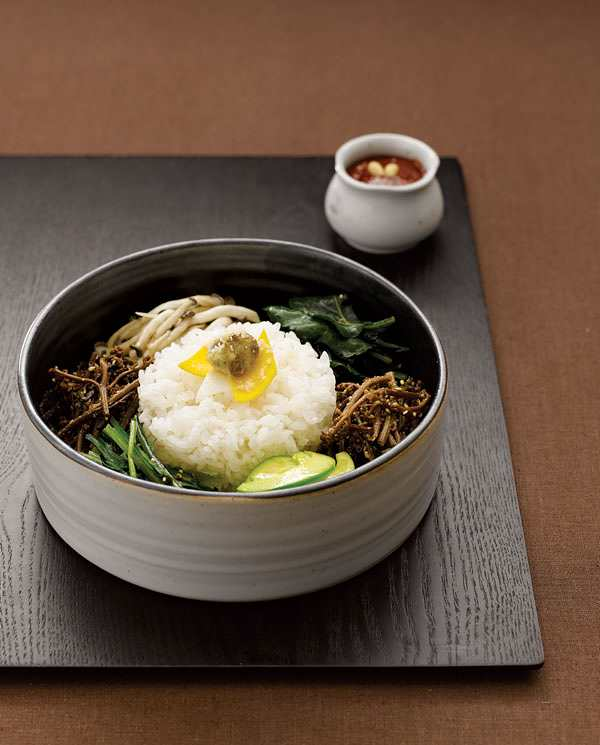

Bibim-Bap, cooked rice mixed with vegetables, sautéed beef and Twigak, (dried seaweed or vegetables fried in oil) is one of the definitive Korean dishes in the eyes of both Koreans and international enthusiasts. Once called Goldongban by the public and Bibim in the royal palace, Bibim-bap has been one of the most popular in-flight meals around the world since it was first introduced by airlines in the early 1990s.

A Product of Ancestral Rites and Communal Labor
There are three common beliefs about the origin of Bibimbap. First, it is said to be derived from traditional Korean ancestral rites. Koreans prepare Bap (cooked rice), meat, fish and vegetables for a table offered to the ancestors. The ritual they perform after holding an ancestral rite is called Eumbok, the partaking of sacrificial food and drink, and Bibimbap is believed to have stemmed from the practice of mixing Bap with other dishes for Eumbok. Some say that Bibimbap originated from the ancient custom of mixing leftover cooked rice with all the remaining side dishes and eating it as a midnight snack on Lunar New Year’s Eve. Lastly, Bibimbap could have been inspired by the simple meals farmers consumed in the fields. Koreans have a custom of communally pooling labor when planting rice or harvesting crops. In order to save time and work, everyone would bring some food which would be mixed and shared out on the fields. Every local variation of Bibimbap has its own unique characteristics depending on the region where it comes from. Bibimbap from Jeonju and Jinju is particularly famous.
A Botanical Garden inside the Bowl
Jeonju is very famous for its Kongnamul-bibimbap (rice with soybean sprouts), an elaborate dish requiring approximately 30 different ingredients. The rice itself is boiled in a stock made with beef brisket, and the dish is topped with a mung bean starch jelly tinted with yellow gardenia juice. Jeonju Bibimbap traditionally has Yuk-hwe (Korean beef steak tartare) as one of the mixing ingredients, but those unaccustomed to eating uncooked beef can have it with regular sautéed beef. Jinju is famous for its Kkot-bap (flower bibimbap), which conjures up images of a beautiful botanical garden. This version of Bibimbap is served with a broth made with chopped littleneck clams sautéed in sesame oil.
Heotjesat-bap, an Indelible Taste
Heotjesat-bap (faux-sacrificial Bibimbap) is a famous local dish in the Gyeongsang Provinces. It is basically a sacrificial Bibimbap without the actual memorial service. The name comes from tales of Yangbans (gentry class) faking ancestral rites just to eat this dish. Others say that commoners, who were not allowed to hold memorial services of this style, cooked sacrificial foods just to eat them. The Bap in Heotjesat-bap is mixed with soy sauce instead of Gochujang (red chili paste) and served with a beef and radish broth, Sanjeok (seasoned beef brochette), Bugeo-jjim (simmered dried pollack), Dubu-buchim (pan-fried tofu), Dombaegi-sanjeok (shark meat brochette) and Namul (vegetable side dishes).
Sanchae-bibimbap and Dolsot-bibimbap
Sanchae-bibimbap (mountain vegetable Bibimbap) was created when Buddhist monks mixed rice with wild-grown mountain herbs and vegetables. The dish is light and fragrant due to the ingredients which are wild-grown in the mountains. Dolsot-bibimbap (stone pot rice with vegetables and beef) is characterized by the Nurungji (crisped rice) that sears at the bottom of the pot. It is especially popular because people can listen to the sizzling sound of the residual heat of the pot continuing to cook the rice. The best part of eating this dish is scraping the Nurungji - the bottom crusty layer of rice – off the stone pot. Dolsot-bibimbap is popular among foreigners who sometimes compare the crusty layer to the Socarrat of Spanish paella.
Bibim-bap and Hollywood Celebrities
Bibimbap has won the hearts of many Hollywood celebrities. Gywneth Paltrow referred to Bibimbap as a personal secret on a TV show featuring Hollywood celebrites’ weight-loss tips. It caused quite a stir when Paltrow uploaded instructions for making Bibimbap on her website. Other self-proclaimed Bibimbap fans include the late Michael Jackson, Paris Hilton and Nicholas Cage.
Bibim-bap as Comfort Food
Nothing is more comforting to Koreans than rice mixed with fiery Gochujang (red chili paste) and all the leftover dishes rummaged from the refrigerator. Koreans say that the moment a spoonful of Bibimbap enters your mouth, the bitterness and resentment in your heart starts to melt away. Bibimbap is the ultimate comfort food for Koreans, which magically provides relief for heartaches, pent up frustrations, and even stress and anxiety. Bibim-bap Ad in Times Square
In the autumn of 2010, a Bibimbap advertisement appeared on the electronic billboard in New York’s Times Square. The colorful ad was eye-catching and featured a variety of Korean cultural items, such as ‘Nanta,’ taekwondo, Samulnori (percussion quartet), circle dance (Ganggangsuweollse), masked dance and the Bukcheong lion dance.
from. Korean Food Foundation